原视频：Bilibili · BV1GHXCBkEZf 课程：NJU《操作系统原理》2026 第 9 讲 整理说明：本书由视频语音转录后经 AI 重构而成，口语已转写为书面语；关键时间点均标注 (参考时间)，截图卡片可跳转视频对应位置。
1. 从系统调用到库：生态的地基
(参考时间: 00:00)
实验二已发布；环境变量与 Makefile 细节可让 AI 读并配置。Online Judge 并非唯一路径——测试用例也可以自己写，关键是动手体验。
前几讲已说明：系统调用三大类足以实现应用世界中的几乎一切（进程、地址空间、文件对象）。但真实软件生态不是直接站在裸系统调用上的，而是：
flowchart TB
A[Python / JavaScript / Android] --> B[C++ / 运行时]
B --> C[libc / POSIX]
C --> D[系统调用]
D --> E[硬件]
C 语言与其标准库是这个洋葱的第一层可复用封装。本讲主题：C 标准库（libc）的原理与实现。
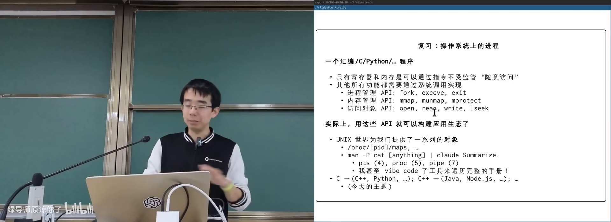
生态分层：libc 是第一层在 B 站打开 (00:08:30)
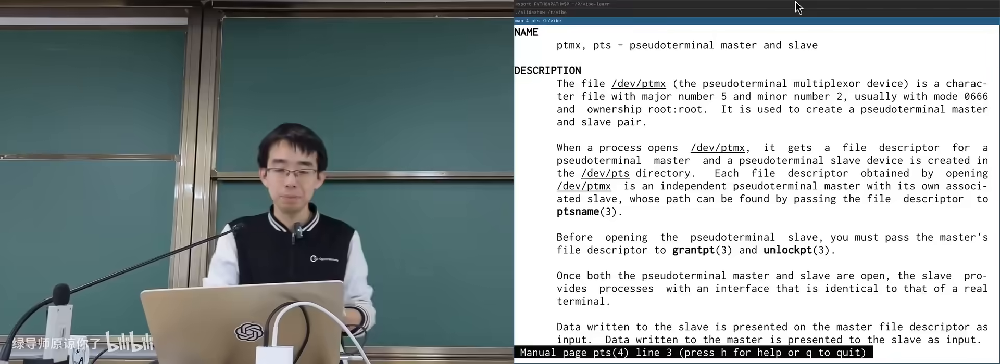
man 手册 + AI：检索系统接口在 B 站打开 (00:04:00)
手册与 AI
系统里处处有手册：man 4 pts、man 5 proc、man 7 pipe。把手册管道给 AI，可得到 summary 并继续追问实现。主讲人还让 AI 把全部 man page 做成可搜索的树状浏览器——现代学习方式是「知道有什么 + 会提取」，而非死记全文。
2. C 的完全体：Simple C 与 FFI
(参考时间: 00:08)
Simple C 只覆盖了 C 的计算部分：赋值、分支、循环，可直译汇编。但 C 还有完整体：
跨语言调用 FFI
外部函数接口（Foreign Function Interface，一种语言调用另一种语言实现的函数的机制）。Python 的 mmap 模块背后是系统调用，而系统调用必须用更低层的手段发出——C/汇编正是那一层。
两种在 C 里接入汇编的方式：
- 链接汇编实现的函数：按 ABI（应用二进制接口） 的调用约定，x86-64 约定参数在
RDI/RSI/...，栈上保存返回地址等； - 内联汇编（inline assembly）：在 C 源码中嵌入汇编片段。
一旦 C 能调用汇编，就能发起系统调用——fork、pipe 等最终都落到汇编例程。
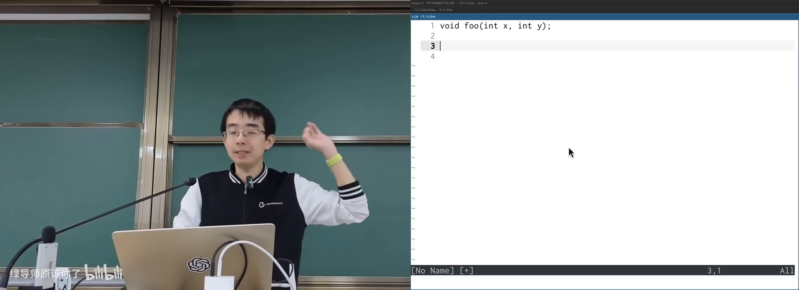
FFI：C 与汇编互相调用在 B 站打开 (00:12:20)
3. 内联汇编：概念重要，细节交 AI
(参考时间: 00:13)
内联汇编是为了「在 C 的词法作用域里引用变量，同时执行一段指令序列」。代价是语法像一块领域特定语言（DSL，只服务某个领域的专用语言）：
- 指令写在字符串里，像
printf一样用%0、%1引用操作数； - 约束：
=r表示写入任意寄存器；读写同一变量要用+； - 必须正确声明 clobber（被这段汇编破坏、编译器应避开的寄存器）。
为什么人类容易写错
- 编译器不解析字符串里汇编的语义，只负责替换操作数后交给汇编器；
- 漏写副作用（例如改了 X5 却未声明）时，今天可能碰巧正确，编译器升级后突然崩溃；
- 系统调用约定要求把参数放进特定寄存器（如 ARM64 的 X0–X5、调用号 X8），与优化器寄存器分配存在张力。
今天的正确态度
建立概念即可：内联汇编是 FFI 的一种，最终原样进入汇编器。写法细节交给 AI/文档；需要极致性能（矩阵乘法、向量点积）时，再让 AI 针对目标指令集生成优化片段。
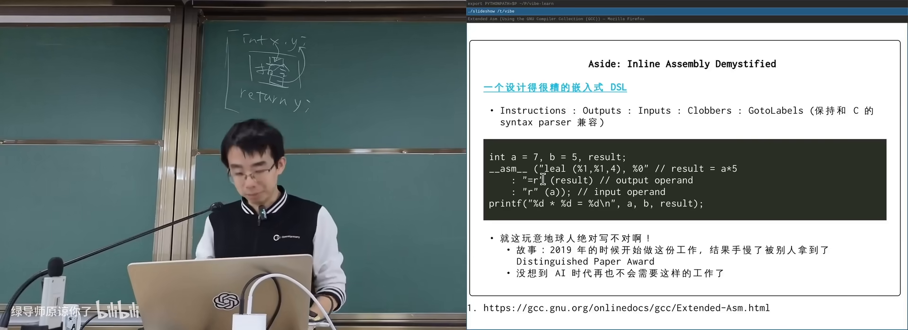
内联汇编手册：DSL 的复杂性在 B 站打开 (00:18:20)
4. Free Standing 与 Hosted
(参考时间: 00:24)
C 程序有两类环境：
| 环境 | 含义 | 例子 |
|---|---|---|
| Hosted | 有操作系统与完整库：fopen 等最终会系统调用 |
普通应用 |
| Free standing | 无 OS：只用不依赖系统调用的语言与库子集 | 操作系统内核、固件 |
Free standing 下可用：
- 固定宽度类型与格式化宏：
int32_t、PRIu64等（%d/%ld随机器字长变化，需宏展开成正确格式串）； offsetof：结构体成员相对首地址的偏移；stdarg.h：变参宏与va_list（现代体系结构参数多在寄存器，库与编译器协作把变参正确落入内存）；memcpy/memmove/strcpy、伪随机数、atoi、qsort、数学库等纯计算设施。
qsort 在 C 里比较难用（函数指针 + void*），因为 C 的语法机制有限——这是「高级汇编」的代价。
setjmp / longjmp
setjmp/longjmp（记录/恢复执行位置，实现跨函数「大跳转」的一对函数） 在状态机模型下很自然：
setjmp(buf)记下当前栈高度与 PC，正常返回 0；- 之后任意深入调用后
longjmp(buf, val)会把栈弹回标记处，并让setjmp像刚返回一样取值为val。
无需系统调用，只要编译器生成正确指令并保存寄存器。用途包括：错误处理集中跳转、协程等。
stateDiagram-v2
[*] --> setjmp
setjmp --> first: 返回0继续执行
first --> second
second --> setjmp: longjmp 弹栈跳回
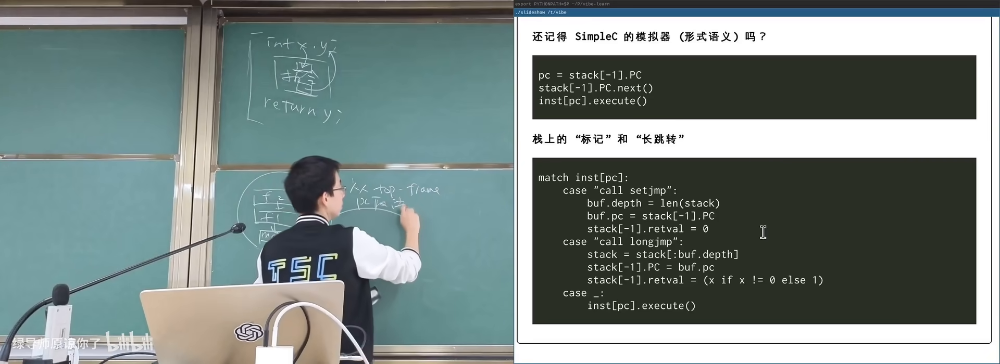
setjmp/longjmp：跨栈帧跳转在 B 站打开 (00:49:40)
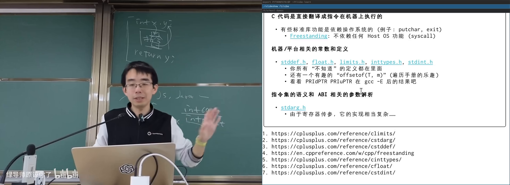
Hosted vs Free Standing 环境在 B 站打开 (00:37:50)
浮点数学还有坑：NaN 满足「不大于、不小于、不等于自己」。
5. musl libc：读懂标准库
(参考时间: 00:30)
系统默认往往是 glibc（GNU C 库，功能全但历史包袱重）。适合学习的是 musl（更干净、贴合现代 Linux API 的 libc 实现）：
- 可下载源码；
- 让 AI 编译出带调试信息的版本与
musl-gcc； - 用
musl-gcc -g3 -static编译教学小程序； - 用 GDB 单步进库函数源码。
源码里能看到什么
stdio.h中SEEK_SET等就是普通宏；FILENAME_MAX、buffer 大小等也是宏定义——计算机世界没有魔法；- 从
inttypes.h宏展开可见字符串字面量拼接如何变成最终格式串。
主讲人曾让早期模型实现教学版 libc（栈对齐都错）；2026 年的大模型已能实现完整教学 libc，偶尔出错也能根据报错自修。但读懂已有实现仍比从零写更有教学价值。
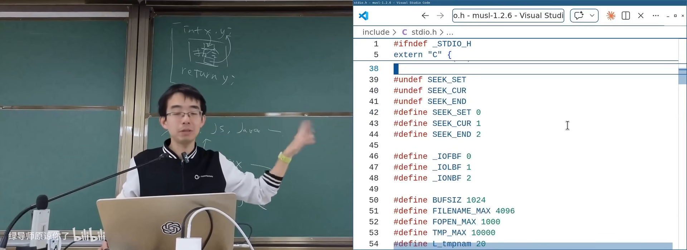
musl 源码：宏与标准 IO在 B 站打开 (00:34:30)
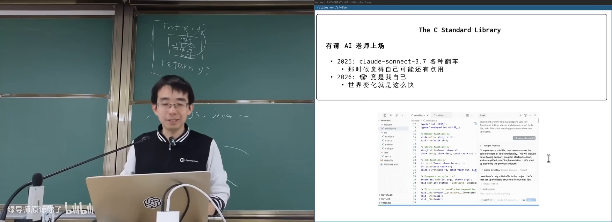
下载并编译带调试信息的 musl在 B 站打开 (00:30:00)
6. stdio：文件描述符上的面向对象
(参考时间: 00:55)
C 标准 IO 与 UNIX 系统调用几乎一一对应：
| C 库 | 系统调用侧 |
|---|---|
fopen / fclose |
open / close |
fread / fwrite |
read / write |
fseek / ftell / feof |
lseek 等 |
FILE（标准库中代表打开文件的结构体） 内部包含：
- 文件描述符（真正的 OS 句柄）；
- 用户态 buffer（缓冲区，减少系统调用次数）；
- 函数指针表：
read/write/seek/close——这是 C 语言式的面向对象：同一FILE*可对接真实文件、sprintf的字符串缓冲等不同后端。
printf 家族最终收敛到一份核心实现（解析格式串 + va_list 取参 + 往 FILE 写），fprintf(stdout, ...) 与 printf 等价，避免代码复制。
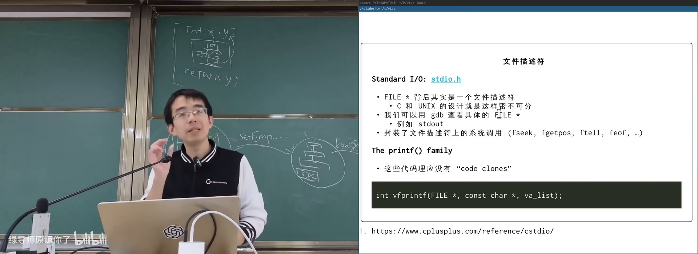
musl 的 struct FILE：fd + buffer + 函数表在 B 站打开 (00:56:10)
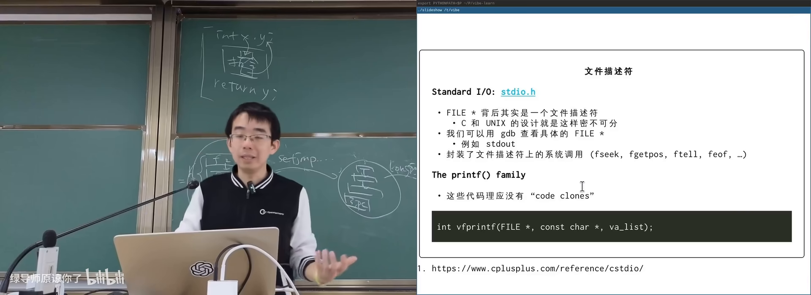
printf 家族：一份核心实现在 B 站打开 (00:58:30)
进程退出相关
atexit：注册正常退出时要跑的清理函数（删临时文件等）；exit：执行 atexit 链表后走系统调用退出；abort：给自己发SIGABRT，常配合 core dump（把进程内存快照转储到文件，便于调试）——名称来自早期磁芯内存 core memory。
7. 错误处理与 POSIX
(参考时间: 01:02)
几乎每个系统调用/库函数失败时都可能出错；手册的 ERRORS 小节列出原因：
EAGAIN：暂时失败，可重试；ENOMEM：资源不足；EACCES/ENOENT/EEXIST：权限、不存在、已存在等。
C 库通过全局 errno（或返回值约定）传递错误号；perror / strerror 把编号翻成当前 locale 的人话。因此同一个 ls 程序在 LANG=zh_CN 与 LANG=en_US 下报错语言不同——行为在 libc，不在内核。
system / popen
system(cmd)：启动 shell 执行命令，重但方便；popen/pclose：返回单向FILE*管道，可读子进程输出（C 的 FILE 只有一个 fd，API 被迫单向，是有历史包袱的妥协）。
POSIX 与一致性
POSIX（规定 UNIX 类系统 API 行为的标准） 之上，libc 提供可移植封装。C 语言有 ISO 标准；只要遵循标准写 portable 的 C，从超级计算机到 1KB 内存设备都可能跑同一份代码。
生态稳定性来自这种分层一致：今天自然语言编程 / AI 生成代码能成立，是因为底下有 C → libc → POSIX → 系统调用这条被标准化的地基。
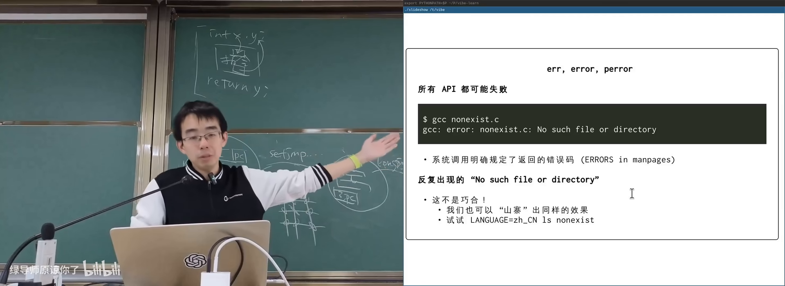
perror：错误信息随 locale 变化在 B 站打开 (01:08:40)
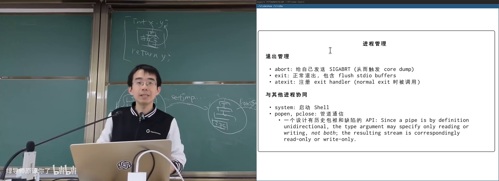
abort / assert：SIGABRT 与 core dump在 B 站打开 (01:03:00)
附录：概念补给
libc（C 标准库）
- 是什么：C 语言语法之外的运行时库：stdio、string、math、进程等。
- 课上为何出现：应用生态在系统调用之上的第一层复用。
- 和什么像：毛坯房（系统调用）之上的标准装修部品。
glibc vs musl
- 是什么：两种 C 库实现；glibc 历史包袱多，musl 更干净现代。
- 课上为何出现：学习 libc 原理时更适合读 musl。
- 常见误解：「Linux 的 libc」不唯一，Android 等还用 bionic。
FFI（外部函数接口）
- 是什么：在一种语言里调用另一种语言函数的机制。
- 课上为何出现：Python/C/汇编如何衔接；系统调用的必经之路。
- 和什么像：跨国公司各部门之间的标准对接邮件格式。
ABI（应用二进制接口）
- 是什么：调用约定、寄存器用途、栈布局、数据对齐等二进制层约定。
- 课上为何出现：C 与汇编互相调用的前提。
- 常见误解：API 是源码级接口，ABI 是二进制级接口。
内联汇编（Inline Assembly）
- 是什么：嵌在 C 源码中的汇编字符串 + 操作数约束。
- 课上为何出现：FFI 的极端形式；系统调用、极致优化。
- 常见误解：编译器不校验其中汇编语义，漏声明 clobber 是经典坑。
Free Standing 环境
- 是什么：不要求完整宿主 OS 与标准库的 C 执行环境。
- 课上为何出现：内核/固件也能用 C；划定库能力边界。
- 和什么像：户外生存只带多功能刀，不带整套厨房。
Hosted 环境
- 是什么：有操作系统与完整标准库支持的普通 C 程序环境。
- 课上为何出现：与 free standing 对比；
fopen依赖 OS。
setjmp / longjmp
- 是什么：保存/恢复执行位置，实现跨栈帧跳转。
- 课上为何出现：不靠系统调用也能操纵状态机；协程基础。
- 常见误解：不是常规控制流，中间跳过的帧不会执行析构/清理（C 没有析构，C++ 中更危险）。
FILE / stdio
- 是什么：标准库中带缓冲的打开文件对象。
- 课上为何出现：对文件描述符的封装与面向对象式后端。
- 常见误解：
printf不是系统调用，内部可能缓冲后再write。
变参（va_list / stdarg）
- 是什么：处理参数个数不定的函数调用的机制。
- 课上为何出现：
printf一族的基础；现代 ABI 下实现更复杂。 - 和什么像：不固定件数的包裹单，按约定顺序在传送带上取。
errno / perror
- 是什么：记录最近错误号；按 locale 打印错误说明。
- 课上为何出现：解释为何同一程序中英文报错都可能。
- 常见误解：errno 是线程局部的，且应在失败后立刻检查。
Core Dump
- 是什么：进程异常终止时把内存写入文件以便调试。
- 课上为何出现：
assert/abort与SIGABRT的关联。 - 和什么像：事故现场的完整监控备份。
POSIX
- 是什么：UNIX 类系统 API 与行为的国际标准族。
- 课上为何出现：解释 Linux/macOS/鸿蒙等为何能共享大量软件。
- 常见误解：POSIX 不是某个操作系统，而是一组标准。
书架 Shelf 流水线生成 · 内容衍生自 B 站公开课程视频 BV1GHXCBkEZf